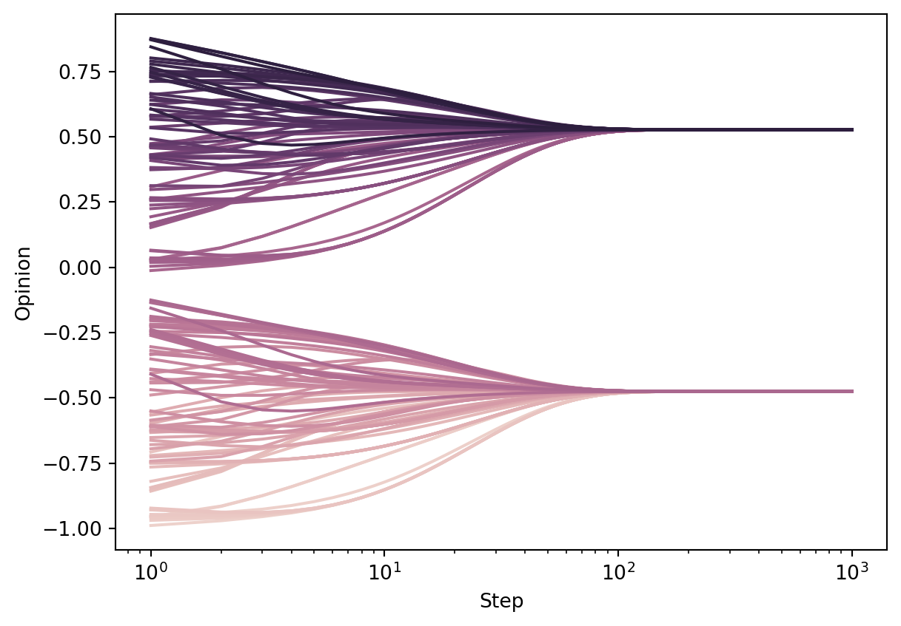
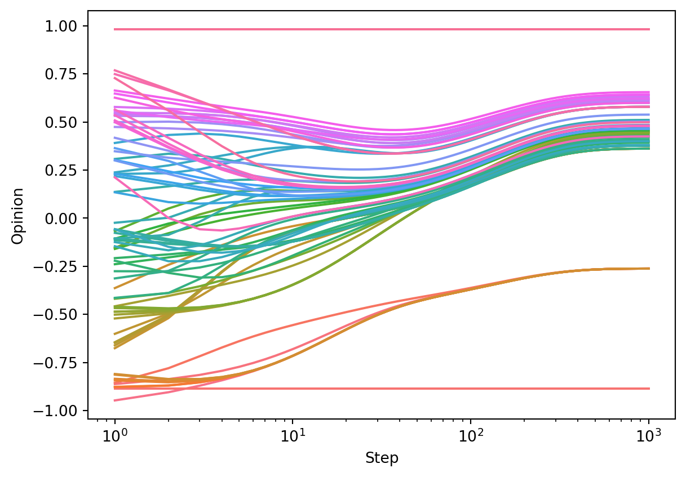
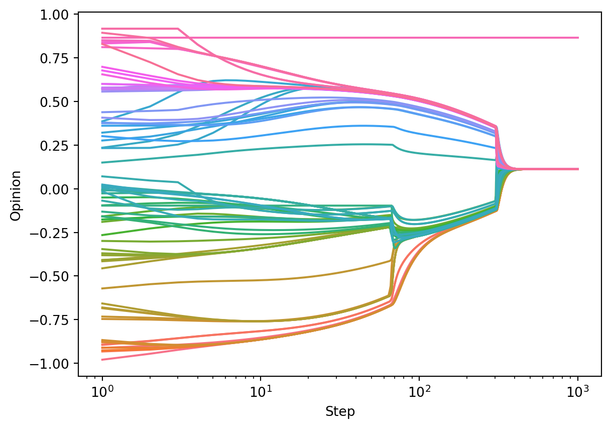

from mesa import Model, Agent # core mesa classes
from mesa.space import NetworkGrid
from mesa.time import SimultaneousActivation
from mesa.datacollection import DataCollector
import networkx as nx # for the grid
import numpy as np # computations
import seaborn as sns # install the seaborn package in your Python environment if this line doesn't run.
from matplotlib import pyplot as plt8 Multi-Agent Models
In this set of lecture notes, we’ll discuss mathematical and computational models of agents interacting on networks. We’ll continue with some of the agent-based modeling techniques that we considered in the previous chapter.
8.1 Opinion Dynamics: Theory
Broadly, an opinion dynamics model is a model of agents discussing and updating their opinions on one or more topic. Here we’ll consider the following common setup of opinion dynamics on networks:
- Each agent lives on a node in a network and doesn’t move. So, we can refer to each agent by the node \(i\) on which it sets.
- Each agent \(i\) has an opinion, which we call \(x_i\). We can collect the opinions into a vector \(\mathbf{x}\). Continuous-state models take \(x_i\) to be in some interval, for example \(x_i \in [-1, 1]\). Here, we would interpret opinions close to \(-1\) as being strongly opposed to opinions close to \(1\). On the other hand, an opinion of \(-\epsilon\) could be in only “weak disagreement” with an opinion of \(+\epsilon\). Other models choose a discrete opinion space for \(x_i\), for example \(x_i \in \{0,1\}\). In this case, there’s no such thing as weak or strong agreement–you either agree or you don’t.
- Time is discrete, so we can talk about the opinion of a node \(i\) at time \(t\), time \(t+1\), and so on. We’ll write this as \(x_i(t)\).
- A node interacts only with itself and its neighbors in the network, and updates its opinion in response to the opinions of its neighbors. This update could be either stochastic or deterministic. It can also be synchronous (every node updates at the exact same time) or asynchronous (only one node updates at a time).
Consensus Dynamics
For our first model, we are going to consider a deterministic, synchronous update model with continuous opinions.
To simplify notation, let \(i \sim j\) if \((i,j)\in E\). Let \(\partial i\) be the set \(\{j \;|\; j \sim i\}\), and let \(\mathbf{x}_{\partial i}(t)\) be the elements of \(\mathbf{x}\) with indices in \(\partial i\). Then, we can write our deterministic, synchronous update as: \[ \mathbf{x}_i(t+1) = F(x_i(t), \mathbf{x}_{\partial i}(t)) \quad \forall i \in N\;. \qquad(8.1)\] In order to fully define our model, we need to specify the update function \(F\). In the DeGroot model, we set \(F\) with the form \[ x_i(t+1) = F(x_i(t), \mathbf{x}_{\partial i}(t)) = (1-\alpha)x_i(t) + \alpha \frac{1}{k_i}\sum_{j \sim i} x_j(t)\;. \qquad(8.2)\]
DeGroot (1974)
Here, \(\alpha \in [0,1]\) is a parameter governing the speed of the dynamics. Intuitively, what’s going on in Equation 8.2 is that each node forms its new opinion \(x_i(t+1)\) by taking a weighted average of its current opinion \(x_i(t)\) with the average of its neighbors, which is \(\frac{1}{k_i}\sum_{j \sim i} x_j(t)\). If \(\alpha\) is small, most of the weight is placed on the current opinion, and so the change in each timestep is small. If \(\alpha\) is large, then each node places a large weight on the neighbor opinions, and so the change in each timestep can be larger.
We can make some progress in analyzing Equation 8.2 by moving a copy of \(x_i(t)\) over to the lefthand side: \[ \begin{aligned} x_i(t+1) - x_i(t) &= -\alpha x_i(t) + \alpha \frac{1}{k_i}\sum_{j \sim i} x_j(t) \\ &= \alpha \left(-\frac{k_i}{k_i}x_i(t) + \frac{1}{k_i}\sum_{j \sim i} x_j(t)\right) \\ &= \alpha \frac{1}{k_i}\left[\sum_{j\in N} a_{ij}x_j(t) - k_ix_i(t)\right]\;. \end{aligned} \]
This entrywise expression has a convenient representation in terms of matrices: \[ \mathbf{x}(t+1) - \mathbf{x}(t) = \alpha \mathbf{K}^{-1}\left[\mathbf{A} - \mathbf{K}\right] \mathbf{x}(t) = -\alpha \bar{\mathbf{L}}\mathbf{x}(t)\;, \qquad(8.3)\] where \(\bar{\mathbf{L}} = \mathbf{K}^{-1}\mathbf{L} = \mathbf{K}^{-1}(\mathbf{K} - \mathbf{A})\) is the random-walk normalized Laplacian matrix.
In order to ensure that \(\mathbf{K}\) is invertible, we need to again assume that every node has degree at least equal to 1.
Now let’s find out why this model is called “consensus dynamics.” A stationary state of our discrete-time dynamical model is a vector \(\mathbf{x}^*\) such that \[ x_i^* = F(x_i^*, \mathbf{x}^*_{\partial i}) \quad \forall i\in N\;. \] Such a vector has the property that it is unchanged by the dynamics. Stationary states and their generalizations describe long-term properties of dynamical systems like this one. Let’s characterize the stationary states of our system.
While one could try to mess with Equation 8.2, it’s much easier and more rewarding to work with Equation 8.3. This is because, if \(\mathbf{x}^*\) is a stationary state of the dynamics, then the righthand side of Equation 8.3 is equal to 0. This leaves us with the equation \[ \bar{\mathbf{L}}\mathbf{x}^* = \mathbf{0}\;. \]
Since \(\mathbf{K}\) is positive definite, we can even simplify this further, to
\[ \mathbf{L}\mathbf{x}^* = \mathbf{0}\;. \]
Remembering the structure of the nullspace of \(\mathbf{L}\) gives us our result:
This result highlights one of the main limitations of consensus dynamics as a model of how opinions evolve. In the world around us, we observe persistent disagreement in social networks, and indeed, one of the main ways in which we observe this disagreement is when agents who disagree interact. The consensus dynamics model says that this shouldn’t really happen, at least in the long term. For this reason, consensus dynamics is a useful mathematical starting point, but doesn’t necessarily tell us much about opinions in real-world social networks.
Bounded Confidence
One arguably strange feature of consensus dynamics is that the influence of node \(j\) on node \(i\) increases with \(\left|x_i - x_j\right|\). The more these two nodes disagree, the more influence they have on each other. This might not track with your own experience.
Are you usually more able to be persuaded by your friends and allies, or by people who disagree with you vehemently?
The idea of bounded confidence is one way to rectify this situation. We’ll study the model of Hegselmann and Krause (2002). The main idea is in fact very simple: we impose a cutoff in which node \(j\) ceases to influence node \(i\) if \(\left|x_i - x_j\right|\) is too large. Mathematically, this looks like modifying the function \(F\) in the following way:
\[ F(x_i(t), x_{\partial i}(t)) = (1-\alpha)x_i(t) + \alpha \frac{1}{k_i(c)} \sum_{j \in \partial i(c)}x_j(t)\;. \qquad(8.4)\]
Here, we’re defining the set \(\partial i(c) \triangleq \{j \in N \;:\; j \sim i, \left|x_i - x_j\right|\leq c\}\) and the effective degree \(k_i(c) = \left|\partial i(c)\right|\). In words, we are now saying that only nodes whose opinions are \(c\)-close can influence each other. This function \(F\) now has two parameters, the rate of opinion change \(\alpha\) and the so-called confidence threshold \(c\). When \(c\) is large, nodes of relatively different opinions can still influence each other, while when \(c\) is small, only nodes that are already in nearly perfect agreement will interact. This is one way to model the idea of echo chambers.
The bounded confidence model is much more difficult to analyze than the consensus dynamics model, and in general it’s not possible to reliably predict the details of the long-term behavior. The best that can be said in general is that:
- The model does indeed reach a stationary state (rather than, say, a limit cycle).
- As \(c\) gets smaller, there is greater possibility for multiple fragmented opinion clusters to emerge. The details of what happens, however, depend on the initial condition.
For this reason, bounded confidence models are almost always studied primarily through simulations.
8.2 Agent-Based Implementations
On that note, let’s implement some agent-based simulations for these models. We’ll start with consensus dynamics. As before, we’re going to develop a flexible model framework that will accommodate both consensus dynamics and bounded confidence dynamics. The trick is to allow the model to accept as a parameter the function \(F\) that describes how a node updates its opinion in response to its neighbors.
It’s not strictly necessary to use agent-based modeling for these simulations; one could instead choose to implement them using matrix-vector products, e.g. Equation 8.3. A hard cutoff operation can be added to implement bounded confidence. However, we are going to continue with an agent-based approach in order to extend the modeling toolbox that we first introduced in the previous chatper.
Consensus Dynamics
As usual, we need to import several items from the Mesa modeling framework. The only new one relative to our previous notes is the SimultaneousActivation scheduler, which allows each node to perform its behavior at exactly the same time, as described by our synchronous dynamics.
Now we’ll define the opinion model class. The overall approach is pretty similar to last time. The main difference is that we are going to place down multiple agents on the graph during the __init__() method of the model.
class OpinionModel(Model):
# model setup
def __init__(self, G, agent_class, x0 = None, beta = None, **kwargs):
self.schedule = SimultaneousActivation(self)
self.grid = NetworkGrid(G)
assert len(x0) == len(G.nodes)
node_list = list(G.nodes)
# place multiple agents, each with an initial opinion
for i in range(len(x0)):
node = node_list[i]
agent = agent_class(node, self, x = x0[i], beta = beta[i], **kwargs)
self.grid.place_agent(agent, node)
self.schedule.add(agent)
self.collector = DataCollector(
agent_reporters = {
"Opinion" : lambda a: a.x
}
)
def step(self):
self.schedule.step()
self.collector.collect(self)Now we’ll implement the first agent class for our model. The OpinionAgent has an instance variable x that stores its opinion. It also has step() method like before that updates its opinion in response to the opinions of its neighbors. For now, we’re going to be very vague about how exactly it does this, wrapping it in a function F as in Equation 8.1. This function needs to accept the updating node, all its neighbors, and then any parameters we supply as well.
A special requirement of the synchronous scheduler SimultaneousActivation is that we need to separate the computation of the new opinion (in self.step()) from actually updating the new opinion (in a new method called self.advance).
class OpinionAgent(Agent):
def __init__(self, agent_id, model, x, F, **kwargs):
super().__init__(agent_id, model)
self.x = x
self.kwargs = kwargs
self.F = F
def step(self):
# find all neighboring nodes
neighbor_locs = self.model.grid.get_neighbors(self.pos,
include_center = False)
neighbors = self.model.grid.get_cell_list_contents(neighbor_locs)
# compute (and store) the next update
self.x_next = self.F(self, neighbors, **self.kwargs)
# this method is required by the synchronous scheduler
# this is where each node actually changes its opinion.
def advance(self):
self.x = self.x_nextIn order to complete our specification of the model, we now simply need to define the update function \(F\). Here’s how it looks for consensus dynamics:
def F_consensus(center, neighbors, beta = 1):
neighbor_opinions = [a.x for a in neighbors]
if len(neighbor_opinions) > 0:
neighbor_avg = np.mean(neighbor_opinions)
return (1-beta)*center.x + beta*neighbor_avg
else:
return center.xLet’s write one last function to partially automate our simulation and visualization:
def opinion_dynamics_experiment(G, F, x0, beta, **kwargs):
model = OpinionModel(G, OpinionAgent, x0 = x0, beta = beta, F = F, **kwargs)
for i in range(1000):
model.step()
report = model.collector.get_agent_vars_dataframe().reset_index()
fig = sns.lineplot(data = report,
x = "Step",
y = "Opinion",
hue = "AgentID",
legend = False)
plt.gca().set_xscale("log")Let’s try it out! We’ll grab a graph, initialize an OpinionModel with a vector of initial conditions, take 1,000 steps, and collect the results in a data frame.
G = nx.les_miserables_graph()
n = len(G.nodes())
x0 = np.sort(2*np.random.rand(n) - 1)
beta = 0.5*np.ones(n)
opinion_dynamics_experiment(G, F_consensus, x0, beta)As predicted by the theory, we can see the agents converging to consensus.
Suppose, on the other hand, that we were dealing with a disconnected graph. This time, although consensus is reached on each of the two connected components, the opinions reached on each component differ.
H = nx.disjoint_union(G, G)
n_ = len(H.nodes())
x0 = np.sort(2*np.random.rand(n_) - 1)
beta = 0.5*np.ones(n_)
opinion_dynamics_experiment(H, F_consensus, x0, beta)
As expected, consensus is reached on each of the two connected components, but the connected components themselves don’t have to agree.
Zealot Nodes
We can perform an experiment with zealot nodes, who never change their opinions, simply by setting \(\beta_i = 0\) for some of the nodes \(i\).
x0 = np.sort(2*np.random.rand(n) - 1)
beta = 0.5*np.ones(n)
beta[2] = 0
beta[-1] = 0
opinion_dynamics_experiment(G, F_consensus, x0, beta)
This time, no consensus is reached, although the nodes do still tend to group together.
Bounded Confidence
Now let’s implement the bounded confidence update. Relative to the consensus dynamics update, there’s just a small change: we need to include in the mean only the nodes which are distance less than \(c\) from the central node. If no nodes satisfy this criterion, we stipulate that the central node doesn’t update at all.
def F_bounded_confidence(center, neighbors, beta = 1, c = np.Inf):
neighbor_opinions = [a.x for a in neighbors if np.abs(a.x - center.x) < c]
if len(neighbor_opinions) > 0:
neighbor_avg = np.mean(neighbor_opinions)
return (1-beta)*center.x + beta*neighbor_avg
else:
return center.xLet’s try it out! In the run below, we see that consensus is almost reached – just a single node is left out and is no longer able to influence or be influenced by the other nodes.
x0 = np.sort(2*np.random.rand(n) - 1)
beta = 0.5*np.ones(n)
opinion_dynamics_experiment(G, F_bounded_confidence, x0, beta, c = 0.4)
Unlike in the case of consensus dynamics, the long-term behavior of bounded confidence dynamics is very sensitive to initial conditions. For example, in the following run (same parameters!), we see the emergence of two polarized communities, as well as a few isolated nodes.
x0 = np.sort(2*np.random.rand(n) - 1)
opinion_dynamics_experiment(G, F_bounded_confidence, x0, beta, c = 0.4)
8.3 Questions for Opinion Models
There are many more ways to handle opinion models, including stochastic or asynchronous update rules, agent variations, and so on. Some questions that are good to ask:
- What happens when some agents refuse to change their opinions? These agents are sometimes called zealots, and can model things like the influence of media or politicians in a social network. (Brooks and Porter 2020)
- What happens if nodes are allowed to move around a network, or perhaps seek out new friends? (Zimmermann, Eguı́luz, and San Miguel 2004; Durrett et al. 2012)
- What happens when opinions are complex and multidimensional? Under what circumstances does polarization still emerge? Can this be used as a model of the formation of political parties? (Kawakatsu et al. 2021)
If you are interested in current developments in opinion dynamics and modeling of social systems, a recent focus issue in the Proceedings of the National Academy of Sciences might be worth checking out.
8.4 Epidemic Modeling
In this section, we’ll study a model of epidemic spreading on networks. There are a LOT of different kinds of epidemic models; see Newman Chapter 16 for an extended discussion. We’re not going to focus too much on the mathematical details of these models. Instead, we’ll focus a bit more on the process of coding up a simulation model that reflects certain ideas or assumptions that we’d like to investigate further.
Let’s consider the following scientific question:
How important is it to get timely information about the current status of an epidemic when making policy decisions?
In order to address this question using models, we need a few different ingredients:
- A model of the epidemic.
- A model of how a decision-maker gathers information and makes policy decisions.
- A model of how those policy decisions impact the epidemic spread.
Let’s take each of these ideas in turn. We’re going to
The SIS Model
The SIS model is one of many compartmental models of spreading processes on networks. Unlike the opinion models we studied above, in which each agent’s state is a continuous variable \(x_i \in [-1, 1]\), in compartmental models, each agent can be in one of several discrete states, called compartments. Think of each compartment as a qualitative status. In the SIS model, there are two compartments:
- Susceptible (S): The agent is not currently infected with disease, but you could be in the future.
- Infected (I): The agent is currently infected with disease, and can spread it to others.
Modern compartmental models include many more compartments than this. One can also include compartments for Immune, Infected (pre-symptomatic), etc. etc. Unfortunately for us, the model above in which immunity is never guaranteed seems like a more relevant one at the moment.
“SIS” stands for “Susceptible-Infected-Susceptible.” This means that an agent who recovers from an infection is again susceptible. We’ll consider a stochastic SIS model with the following transition rules.
- If agent \(i\) is currently Susceptible, then for each Infected neighbor of \(i\), agent \(i\) flips a coin with probability of heads \(\beta\). If any of these coins come up heads, then \(i\) also becomes Infected.
- Additionally, if agent \(i\) is currently Susceptible, then they also flip a coin with probability of heads \(\beta_\mathrm{background}\), and become Infected if this coin comes up heads. The background infection rate models contacts with people outside the network data.
- If \(i\) is currently Infected, then \(i\) flips a coin with probability of heads \(\gamma\). If this coin comes up heads, then \(i\) recovers and is now Susceptible again.
This is already a complete model that we can code up. In fact, our CompartmentalModel and CompartmentalAgent are very similar to our opinion model from the previous section.
class CompartmentalModel(Model):
# model setup
def __init__(self, G, agent_class, p_infected = 0, beta = 0, beta_background = 0, **kwargs):
self.schedule = SimultaneousActivation(self)
self.grid = NetworkGrid(G)
self.beta = beta
self.beta_background = beta_background
node_list = list(G.nodes)
# place multiple agents, each with an initial opinion
for i in range(len(node_list)):
node = node_list[i]
state = "I" if np.random.rand() < p_infected else "S"
agent = agent_class(node, self, state, **kwargs)
self.grid.place_agent(agent, node)
self.schedule.add(agent)
self.collector = DataCollector(
agent_reporters = {
"State" : lambda a: a.state
}
)
def step(self):
self.schedule.step()
self.collector.collect(self)Our CompartmentalAgent class also has a very similar structure:
class CompartmentalAgent(Agent):
def __init__(self, agent_id, model, state, F, **kwargs):
super().__init__(agent_id, model)
self.state = state
self.F = F
self.kwargs = kwargs
def step(self):
neighbor_locs = self.model.grid.get_neighbors(self.pos,
include_center = False)
neighbors = self.model.grid.get_cell_list_contents(neighbor_locs)
self.state_next = self.F(self, neighbors, self.model.beta, self.model.beta_background, **self.kwargs)
def advance(self):
self.state = self.state_nextdef F_SIS(center, neighbors, beta = 0.01, beta_background = 0.0001, gamma = 0.1):
if center.state == "S":
if np.random.rand() < beta_background:
return "I"
num_infected_neighbors = sum([a.state == "I" for a in neighbors])
if sum(np.random.rand(num_infected_neighbors) < beta) >= 1:
return "I"
return "S"
if center.state == "I":
if np.random.rand() < gamma:
return "S"
return "I"G = nx.les_miserables_graph()
model = CompartmentalModel(G, CompartmentalAgent, p_infected = 0.01, F = F_SIS, beta = 0.01, beta_background = 0.001, gamma = 0.1)
for i in range(1000):
model.step()
report = model.collector.get_agent_vars_dataframe().reset_index()
report["is_I"] = report["State"] == "I"
percentages = report.groupby("Step")["is_I"].mean()
fig = plt.plot(percentages)This already doesn’t look like such a qualitatively bad model; we can see that it produces waves of epidemic.
Incorporating Global Policy
Suppose now that we consider a decision-maker with the ability to reduce the rate of transmission through measures such as mask mandates, shelter-in-place orders, or similar measures. We’re going to model this as saying that the decision-maker has the ability to control the transmission rate \(\beta\). We’re going to assume that they impose mitigation measures when they observe a rate of infection above a certain point, and remove these mitigation measures when they observe a rate of infection below a certain point. However, we’re going to assume that their information is lagged: their most recent data is actually \(k\) days in the past. We’re going to study what the impact of \(k\) is.
The way we implement this behavior in code is by having the model change \(\beta\) when it observes the (lagged) data telling it that this is possible. This requires only that we (a) store the possible values of \(\beta\) as instance variables and (b) that we add some additional behavior to the model’s step() method to toggle between the two of them.
class CompartmentalModel(Model):
# model setup
def __init__(self, G, agent_class, p_infected = 0, beta_background = 0, beta_low = 0, beta_high = 1, threshold = 0.2, lag = 0, **kwargs):
self.schedule = SimultaneousActivation(self)
self.grid = NetworkGrid(G)
self.beta = beta_high
self.beta_low = beta_low
self.beta_high = beta_high
self.beta_background = beta_background
self.threshold = threshold
self.lag = lag
self.history = []
node_list = list(G.nodes)
# place multiple agents, each with an initial opinion
for i in range(len(node_list)):
node = node_list[i]
state = "I" if np.random.rand() < p_infected else "S"
agent = agent_class(node, self, state, **kwargs)
self.grid.place_agent(agent, node)
self.schedule.add(agent)
self.collector = DataCollector(
agent_reporters = {
"State" : lambda a: a.state
}
)
def step(self):
self.schedule.step()
self.collector.collect(self)
percentage_I = np.mean([a.state == "I" for a in self.schedule.agents])
self.history.append(percentage_I)
if len(self.history) > self.lag:
if self.history[-(self.lag+1)] > self.threshold:
self.beta = self.beta_low
else:
self.beta = self.beta_highBecause we implemented our Agent class to work with the model’s value of \(\beta\), we don’t actually need to make any more changes to our agents: we are ready for experiments!
def experiment(lag):
G = nx.les_miserables_graph()
model = CompartmentalModel(G, CompartmentalAgent, p_infected = 0.01, F = F_SIS, beta_low = 0.01, beta_high = 0.03, beta_background = 0.001, gamma = 0.1, threshold = 0.05, lag = lag)
for i in range(500):
model.step()
report = model.collector.get_agent_vars_dataframe().reset_index()
report["is_I"] = report["State"] == "I"
percentages = report.groupby("Step")["is_I"].mean()
return(percentages)Let’s visualize the progress of 5 different simulations, with different values of the lag.
fig, axarr = plt.subplots(5, figsize = (5, 8))
lags = [0, 10, 20, 30, 40]
for i in range(5):
percentages = experiment(lags[i])
axarr[i].plot([0, 500], [0.05, 0.05], color = "grey", zorder = -10, alpha = 0.3)
axarr[i].plot(percentages)
axarr[i].set_ylim([0, .5])
mean_perc = np.round(100*np.mean(percentages), 1)
axarr[i].set(title = f"Lag: {lags[i]} days, mean infection level = {mean_perc}%")
axarr[i].set(ylabel = "% Infected")
plt.tight_layout()When the lag is small, it is possible for the global policy to keep the infection level relatively close to the threshold at 5%. However, when the lag is much larger, the same decision-making criterion leads to dramatically more infections–almost 15% in some of these simulations.
8.5 What Next?
It’s important not to overinterpret simulation results like the above. The SIS model that we’ve implemented here is an interesting qualitative model with some realistic behaviors. However, it’s far too simple a model to be used to make quantitative predictions about the spread of real diseases. Epidemiological models that aim to do accurate disease forecasting need to take into account questions like:
- What actually is the network on which disease spreads? Is it your social network? Do the people you sat next to on the bus count? Do different kinds of contacts carry different levels of transmission risk? How do we account for the fact that your contacts can vary from day to day?
- What are the right compartments for modeling? Most diseases aren’t just “on our off.” Other important compartments include “infectious asymptomatic,” “infectious symptomatic,” “partially protected,” etc. etc. More complicated models describing how agents transition from one of these states to the other are needed for accurate forecasting, and estimating the rates (like \(\beta\)) is a challenging statistical task.
- How do decisions get made, communicated, and implemented in the network? Decision-makers don’t actually have the ability to magically change everyone’s behavior instantaneously, and the measures to which they do have access often come with costs (financial, political).
So, it’s important to be careful when interpreting these models for use in the real world. In the model that we just discussed, I would describe our finding as:
Decision-making based on timely data can significantly reduce overall infection levels.
However, I’d hesitate to be more specific than that, and I wouldn’t lean too heavily on the quantitative details.